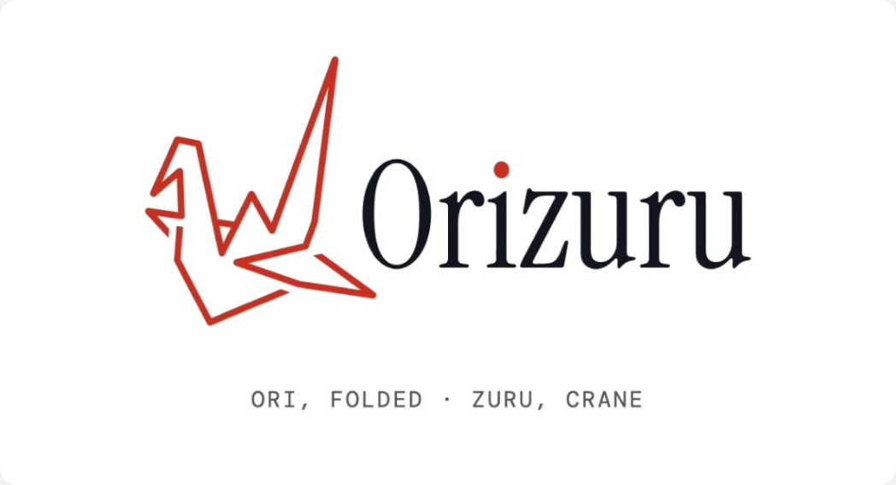

How Orizuru works
Take the photo you’d
take anyway
It folds into a paper crane and drops into your jar. Up to six a day.
Nothing to check
during the day
No time, no place. Only the charm glows for two seconds when your partner folds one.
Open them together
on the call
The cranes fly over and unfold. Each of you picks a favourite, and the two are woven into one.
“It’s fine… but don’t do long distance.”
Cherry and I grew up in Shanghai and met in high school. When we left for university, I went to Providence and she went to Vancouver: three hours apart, and not one direct flight between them.
We both live our own lives, and we love them. But some nights there was nothing left to talk about. We’d end up doomscrolling on our own, with FaceTime still running in the background.
We didn’t need an app to replace that call. We needed some context to start it.
How might we give long-distance couples something to talk about on the night call, without watching each other or adding chores?
Everyone had tried a couple app. Everyone quit.
We started with the people around us: six friends, three still in long-distance relationships, two who broke up with long-distance partners, and one who made it back to the same city. The two breakups were the hardest conversations.
We went in expecting “recapping your day is a chore.” That mostly didn’t show up. What did surprise us: every one of them had tried a couple app, and every one of them had stopped using it.
Six relationships.
Hover or tap a row to read that relationship’s story.
P01 · broke up. Together from 2022, long distance from September 2024, 0h apart. The shared diary app died when he stopped writing, so she stopped too, with no conversation about it. She rated distance 4 out of 10 as a cause: “the distance just made the problem more obvious.”
P02 · still apart, 15h. Together since 2022. They used a full tracking app freshman year, while trust was low, and quietly stopped as it grew. Now long distance feels “comfortable.”
P03 · same city now. One summer apart in 2025, about 5h. The first few weeks were the hardest: “a lot of what we used to do was physical.” Calls and video games filled in.
P04 · still apart. Nearby but never in the same place since December 2024, and 12h apart over school breaks. “Once a week felt too little.” The bedtime call “has become a check-in task.”
P05 · still apart, 3h. Together since 2021, long distance since June 2022. The first year was the hardest, until a routine fixed it: FaceTime every night, often left on all night.
P06 · broke up. All long distance, from 2024. Not recorded.
Surveillance or chores
We mapped about 20 couple and sharing apps by how much effort they ask for and how much story they tell. Most do one of two things.
What actually kept them close was still the night call.
Almost everyone already sends their partner photos and FaceTimes at night. But with nothing new to say and no context for each other’s day, the call starts to feel, in one friend’s words, “so NPC.” So our stance became: no watching, no chores. Build towards the call that’s already there.
Three questions, and what we killed on the way.
Our first versions did too much: a map of each other’s day, daily prompts, make-ups for missed prompts, colour matching, a charm swap. After office hours with Naheel Jawaid, SVSD’s founder, we cut everything down to one flow and one problem.
Orizuru came out of three questions. For each one, here’s what we tried first and why it didn’t make it.
How do you keep it from feeling like a chore?
Every app our friends quit asked them for something: a diary to fill, a pet to feed, a streak to keep. So our first instinct was to ask for nothing at all.
Make it effortless
The app, or a charm that goes with it, would start tracking when you left home and stop when you got back. Nothing to do, ever.
But a relationship isn’t a to-do list. A little effort is how you show you care, so it can’t be zero. What has to go is the other kind: the pet that dies, the streak that resets. No streaks, no penalties.
The photo you’d take anyway
Almost everyone we talked to already sends their partner photos during the day and FaceTimes at night. Those aren’t extra tasks. So when you see something you want them to see, you take the photo like you would anyway. It folds into a paper crane and waits in your jar for them to open later, up to six a day. No extra task, nothing to keep up.
How do you each live your own life, and still share it?
Once photos were going across, the question was how much of each other’s day to show. Too little and you’re absent from each other’s lives. Too much and it’s surveillance again.
A map of each other’s day
Every photo pinned to where and when you took it, so your partner could piece your day together. It turned into a scoreboard: have they seen mine yet, why did I post more, whose day looked better.
At office hours, Naheel pointed at the lines: every line between two dots asks what you were doing in between. And timestamps invite checking.
No time, no place
Your partner can’t watch your day as it happened. The crane stays folded until night. A hidden photo feels like something kept from you; a folded one is just waiting to be opened.
The only signal is the charm glowing for two seconds. Most of the time you’ll miss it, and that’s on purpose: it’s not a notification you can trace back or scroll through. But once in a while you catch it, and someone far away is thinking of you, right now.
How do photo moments become a story worth keeping?
A day of photos is still just a camera roll. We wanted the night to leave something behind that belongs to the two of you.
Reactions, then colour matching
We tried answering photos right away, with comments and reactions. But a reaction answers the moment, and closes it.
Then we let the app find the story itself: if you both photographed something the same colour on the same day, it wove them into one image. It looked lovely, but a colour match is objective. It doesn’t mean anything to the two of you.
Pick one each, keep it together
At night, on the call, your partner’s cranes fly over and unfold into their day. You swipe through it and the stories come out loud. Each of you double-taps a favourite, and the two are woven into one: tilt one way for my day, the other for yours. Then the app gets out of the way.
- 1. Wait for the cranes to land, then tap any photo.
- 2. Swipe through Jack’s day and double-tap your favourite.
- 3. Jack picks one of yours. Tap to weave the two.
- 4. Move your cursor, or drag, to tilt between both days.
This is the real prototype, running in the page.
One day, folded and unfolded.
The prototype is a working web app, not a click-through: a real camera, real 3D cranes, a real jar, and a night call you can run end to end. The one-minute film below is the demo part of our submission video, made in code with Remotion.
Memories
Every night you’ve kept is there to come back to. Memories opens on your core memories, the woven pairs, because those are the point. A calendar of every photo sits one tap behind them. Inside a night, red dots on an arc stand for each memory in order, with a tiny polaroid hanging under each, and no times anywhere.
Everything is paper.
Orizuru is the Japanese name for the origami paper crane: ori, folded, and zuru, crane. I built the brand from it: white paper, a grey fold, ink, and the red crown of the red-crowned crane, a bird that pairs for life. It’s the red dot on the i.

Square photos, sharp corners
Origami starts from a square with sharp corners, so every photo does too. Physical things like the camera and buttons stay rounded.
Folded-paper buttons
Every button, pill and the nav is a sheet of paper with its corners cut at 45° and folded under.
A real crane, in 3D
The crane is modelled fold by fold in three.js, so a flat photo actually folds into it, and drops into a glass jar.
The stance goes all the way down to the code: each photo is redrawn as a plain square image before it’s saved, so no location or time comes along with it.
The hardest part was cutting.
Our biggest problem was never a lack of ideas; it was too many of them. Most of what we designed in the first three days isn’t in Orizuru, and it’s better for it. Every cut made the one remaining flow easier to remember.
The crane itself came from a constraint. We wanted photos hidden until the call, but we didn’t want to just take the blur we’d been offered as a suggestion. Folding turned “hidden from you” into “waiting for you.”
We also designed for ourselves, which made it easy to care and hard to stay honest. Interviewing friends outside our own relationship is what kept us from building the app we assumed we needed.
Just like a jar of paper cranes, a day apart can be folded small, carried far, and opened together.